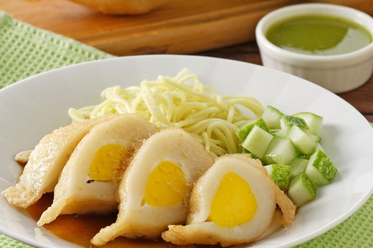

<< Daftar Resep
Kuliner Khas Palembang - Pempek
Pempek Palembang
Bahan |
Cara Membuat |

Pempek atau empek-empek adalah makanan yang terbuat dari daging ikan yang
digiling lembut yang dicampur tepung kanji atau tepung sagu, serta komposisi
beberapa bahan lain seperti telur, bawang putih yang dihaluskan, penyedap
rasa, dan garam. Pempek biasanya disajikan dengan kuah cuka yang memiliki
rasa asam, manis, dan pedas. Pempek sering disebut sebagai makanan khas
Palembang, meskipun hampir semua daerah di Sumatera Selatan memroduksinya.
Bahan-bahan:
- 500 gr ikan tenggiri giling
- 1 butir putih telur
- 250 ml air
- 1 sdm garam
- 1 sdt penyedap jamur
- 350 gr tepung Sagu
- Air secukupnya untuk merebus
- Telur secukupnya (untuk isian)
Bahan Kulit Pempek:
- 400 gram kulit ikan tenggiri
- 1,5 sendok makan gula pasir
- 1,5 sendok teh garam
- 1/2 sendok teh merica bubuk
- 5 siung bawang putih dihaluskan
- 125-150 ml air dingin
- 300 gram tepung Sagu/tapioka
Bahan cuko:
- 300 gram gula merah
- 700 ml air
- 1 sendok teh gula pasir
- 8 bawang putih
- 10 cabai rawit merah
- 1 sendok makan asam jawa dilarutkan dengan sedikit air
- Sedikit garam
- Sedikit cuka putih
Cara Membuat:
- Masukkan ikan ke dalam baskom, beri putih telur, air, garam dan penyedap jamur, aduk rata
- Masukkan tepung sagu, aduk rata kembali
- Ambil 150 gr adonan, beri isian 1 butir telur
- Masukkan adonan yang sudah dibentuk ke dalam air mendidih, masak hingga mengapung.
- Angkat dan tiriskan dengan cuko pempek.
Cara Membuat Pempek Kulit:
- Haluskan kulit ikan tenggiri yang masih setengah beku dengan food processor atau penggiling.
- Campur dengan bahan lainnya kecuali tepung sagu. Aduk rata.
- Campurkan tepung sagu sedikit demi sedikit.
- Balurkan tepung sagu di tangan dan di talenan. Sendokkan adonan pempek, gulingkan di talenan lalu bentuk pipih. Lakukan sampai adonan habis.
- Goreng pempek dengan api sedang dan sudah panas agar pempek garing dan tidak menyerap minyak terlalu banyak. Adonan yang belum digoreng bisa disimpan di chiller.
- Lalu buat sambal cukonya. Haluskan bawang putih dan cabai rawit, campur dengan cuka dan garam. Diamkan hingga 30 menit.
- Lalu masak dengan bahan lainnya agak lama hingga mendidih dan agak kental. Diamkan semalaman dan saring. Sajikan pempek kulit dengan sambal cuko.
Atas
KEMBALI